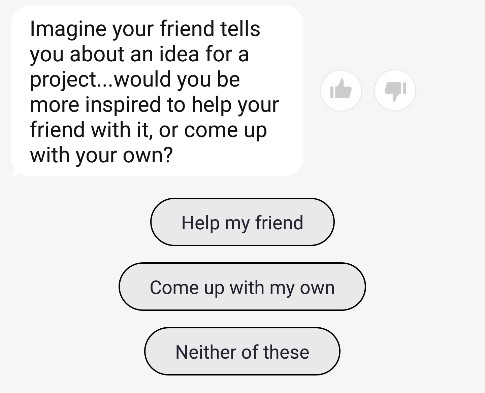

To develop a more diverse emotions classifier tool for chatbot interfaces, particularly an open-source chatbot known as 'cakechat' hosted on Github. This is currently limited to 5 base emotions, 'Neutral', 'Happy', 'Angry', 'Sad' or 'Scared'. The aim of the project would be to add more base emotions to the emotions classifier tool, or change the structure of the way the tool works itself, to allow for more sub-traits of each emotion to be more identifiable.
'68% of consumers are utilizing machine learning and artificial intelligence capabilities via their smartphones, often without realizing it.' (Deloitte, 2017)
Simply put, Artificial Intelligence has substantially imbedded itself throughout society. From pizza chatbots, to customer service bots, Siri, Alexa and plenty more. One of the most standout features that seems to be lacking is the ability for bots to recognise and respond appropriately to different emotions depending on their context. Applications like Replika, which host their code open-source on Github known as ‘Cakechat’ use their own emotions classifier. However, you can alter this to be any emotions classifier you wish, such as DeepMoji or another of your choice. The main motivation for this idea is exactly that, noticing the ability to replace the emotions classifier in cakechat with another version. This, and realising that doing this could result in a better user experience with personalised AI chatbots.
More people are gaining access to the internet and mobile phones every day and the rate they use them are increasing rapidly. ‘Users look at their phone [on average] 47 times a day, with 89% checking in within one hour of waking up and 81% checking within one hour of going to sleep.’ (Deloitte, 2017) AI tools to help recognise and truly understand an increasingly diversifying population is becoming a necessity, in the form of a personalised AI assistant and plenty others.
Sentiment Analysis is used to portray sentiment polarity. Be it a product or movie review, sentiment analysis captures public sentiment in reaction to brands which influences future business decisions. However, this method can only categorise text into either a positive or negative class. A more refined emotions classifier has the ability to extend beyond the reaches of just conversational chatbots, such as changing the way sentiment analysis is conducted and reviewed.
Currently, the Replika interface allows 5 base emotions as addressed earlier. In conjunction with this, the persona-based neural conversation model can recognise different personality traits (up to 20 badges). There are 122 available. These traits however are developed through a quiz-based format within the chat interface itself, and only represent answers to questions you have given. From this, the model converses in accordance to your traits. If the model were capable of developing its own personality traits, and not simply converse on the basis of understanding another’s personality traits this may yield more precise results. Either this, or simply allowing the model to better understand each of the 5 base emotions with the context of sub-traits may also do the same.
The goal is to change the way the chatchat emotions classifier currently works, to allow for greater emotional perceptiveness. How exactly this will be done is still up for debate. I imagine that a more precise definition of each emotion, and giving the model the capacity to not only learn and understand them, but exhibit them itself will allow for greater emotional perceptiveness. If this idea were to progress any further than here it would seem completely reasonable to assess the merit of how exactly the emotions classifier will be changed, and the overall effectiveness of that change. For example, the emotions ‘Excited’ and ‘Tender’ would currently fall under somewhere between ‘Happy’, ‘Sad’ and ‘Neutral’. When in fact none of these accurately represent the emotion expressed. If even ‘Excited’ and ‘Tender’ as base emotions could be added to the original list of 5, this would change the model’s ability to interact with the user. On top of this, using their inbuilt concept the badges could be used as personality sub-traits of each emotion. This would highlight emphasis in statements that would be otherwise overlooked. Both the fundamental emotions and sub-traits being altered would change the emotions classifier so that the models output has a heightened ability to interpret and respond to emotional context appropriately. This would be solidified through the continual use of the emotions classifier through the chatbot over time, as it functions as a persona-based neural conversation model.
The Cakechat repository would have to be cloned and installed properly, along with DeepMoji and potentially other emotions classifiers for reference. As far as hardware goes, any reasonably current computer that can be used for appropriate CS/IT courses should be more than sufficient.
There will need to be a reasonably proficiency in Github and Python. Possibly a need to understand Theano and Lasagne though not entirely necessary. Somewhat feasible depending on the groups mutual ability to code and dedicate an appropriate amount of time on the project.
The desired outcome would be to have a working chatbot running through a slightly more expansive/efficient emotions classifier. If you try speaking to Replika, the application version of the open-source software cakechat, you will have a basic understanding of what the issue is. The outcome of this project wouldn’t be to necessarily solve the issue of emotions classification, but more experiment in extending the field. Simply, a chatbot with more than 5 different base emotions should be more personable. The impact this may have could be a more personal interaction with AI personal assistant software around the world. In conjunction, if consumer sentiment analysis were to adopt an approach like this it could revolutionise the way data is processed for targeted advertisements.